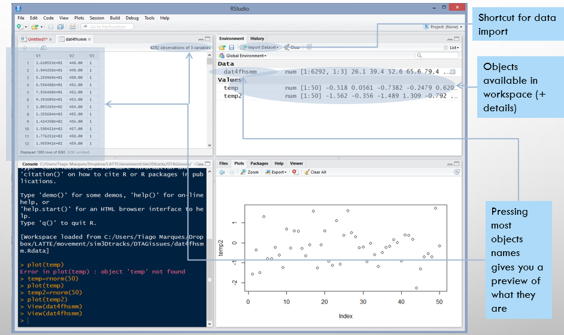
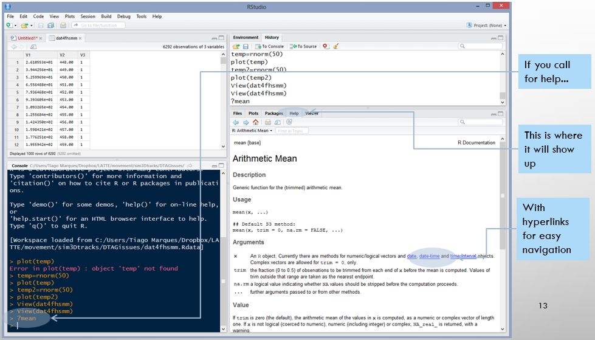

[1] 11A quick introduction to R and RMarkdown from within RStudio
Tiago A. Marques
2025-09-07
Objective
A quick introduction to the topics to be used in courses that require such introduction, including TAM’s courses Ecologia Numérica and Modelação Ecológica at FCUL
but also to support the self paced learning github repository hosted at https://github.com/TiagoAMarques/AnIntro2RTutorial
The tutorial has a landing webpage (and hence looks a bit friendlier) here:
Learning goals
Obtain a working knowledge about the R software and environment, to be able to implement basic data analysis
Integration of R and RStudio, an helpful R interface, via a short introduction to R and RStudio followed by a hands on assisted tutorial
The R environment
- R is both a programming language and an environment for statistical computation
- R is free open source software
- Created in 1995 by Ross Ihaka and Robert Gentleman, Department of Statistics of the University of Auckland
- gets its name from another famous programming language for data analysis, S
- Project run by the “R Core Development Team”
- Software and many resources available at the r-project.org/
I am using version 4.3.1 (2023-06-16) (those guys are fast…this will probably be outdated!)
R: a selected timeline
In Giorgi et al. 2022 The R Language: An Engine for Bioinformatics and Data Science Life 12: 648 DOI: 10.3390/life12050648
The R base + packages
- R base installation comes with a number of libraries which provide access to a large number of commonly used features (e.g. linear models, survival analysis, basic statistical distributions, etc)
- One of R’s key strengths comes from the fact that many more packages are available online, under constant increase
The R environment
- R was traditionally accessed solely via the command line, making the learning curve rather steep for beginners
- Here we focus on Rstudio, a program to interface with R, making many of the most common tasks simpler. Let’s open Rstudio shall we?
RStudio
- (as R) Free and open source
- An integrated development environment for data analysis
- Simplifies the user interaction with R
- In a single application you have access to a number of windows containing the code, the command line, the figures, the help, a windows explorer, etc.
4 windows, 4 ways to interact with R
The code and plots tabs
The environment tab

The packages tab
History and “windows explorer” tabs
The help tab

Aditional online resources
R HAS AMAZING (ENDLESS) ONLINE RESOURCES
R Markdown and Dynamic Reports
Creating a dynamic report I
Let us create a dynamic report from scratch in RMarkdown via RStudio

Set Title and author
Let us create a dynamic report from scratch in RMarkdown via RStudio
Almost there
This is what you should be seeing. Check your title and name are there.
Compile the .Rmd
To do so press the “Knit” button. After you do you are asked to save the files, tell RStudio where it should do so it and what is the file name (I am using “My1stDynamicReport.Rmd”)
If you run into issues
Regarding “latin” characters showing, like say “é”, “õ” and â”
Et voilá
Your first dynamic report is ready
If you want it in the viewer pane
Unless you have customized RStudio to do otherwise, the html appears in a new window. To have it in the viewer pane, change the options under Tools| Global Options
Possible outputs
Your now have your first HTML automatically generated, obtained from compiling (=knitting) the .Rmd file (“My1stDynamicReport.Rmd”).
Actually, the output could also be a Word file or a PDF.
Not all possible features are available in word
Generating PDF’s requires some additional software (LaTex) - you can try that on your own. Good luck ;)
Experiment with the .Rmd file
Try to insert a new bit of code with
Code|insert chunck(shortcutCtrl+Al+I)Change a chunck’s options (e.g.
eval,echo, etc) fromTRUEtoFALSEand see what whappens to the outputTry to use dynamic numbers like this one: 0.145665 printing the mean value of 5 random Gaussian numbers. For that you need to use something like `? mean(rnorm(5))` (note: replace the “?” with the leter “r” so that it knows you want to run r code).
For more, check e.g. the RMarkdown cheat sheet
Warning: command line vs .Rmd
When you run some code within a .Rmd, it is only run in the .Rmd
When you run some code in the command line, it is only run in the command line
Therefore, reading the data in the command line does NOT mean it will be available for a dynamic report, and vice versa!
Tips and Tricks
It is much safer to compile the entire document than to run code chunks separately
An .Rmd is not a usual script, it has both code and text. The result is a dynamic document, with Text, Code, and OUTPUTS of the code
The code must go always, always, always inside a code chunck!
Comments to the code can also be within code chunks (preceded by “#” – the hash symbol).
Useful RMARKDOWN web resources
An RMarkdown template with lots of tips and trick made just for YOU here
About R Markdown, the oficial site here
The online free book
Chapter 27 on RMarkdown from the fRee online book: R FOR DATA SCIENCE here
-how to write a book with markdown, with several VERY USEFUL BOOK examples available for free here
BE PROACTIVE: EXPLORE RESOURCES
Example: dynamic reports are useful
The following activity allows you to see the life-time saving usefulness of dynamic reports if you are someone that does data analysis. Check in folder “ExampleDataAnalysis” at
https://github.com/TiagoAMarques/AnIntro2RTutorial
- Download the 4 files in the folder
- Open ExampleDataAnalysis.Rmd
- Compile it and see the results
- Implement the last few actions
- Recompile the report
- Compare the results obtained
And finally…
Open the hands on R tutorial (“TAMsIntro2RviaRStudioTutorial.pdf”) and work through it
If you are seeing this slide
It is because you either:
- have completed the tutorial (well done you, keep it going!)
- are being shown the slide in class by me/someone (and hence might do the tutorial next, go for it!)
- are not following the rules if working alone (shame on you ;), but hey, rules are meant to be broken, YOLO.
Next couple of slides are about learning more about R on your own. Besides all the stuff at the landing page of my github repository here:
https://github.com/TiagoAMarques/AnIntro2RTutorial
You can try a couple of things
Teach yourself
A great place to start Ten simple rules for teaching yourself R
Get a (virtual) R Tutor
You can find one within the swirl R package: try it out!
And now, off you go!
The path to R mastery is winding, but the reward is worth it…